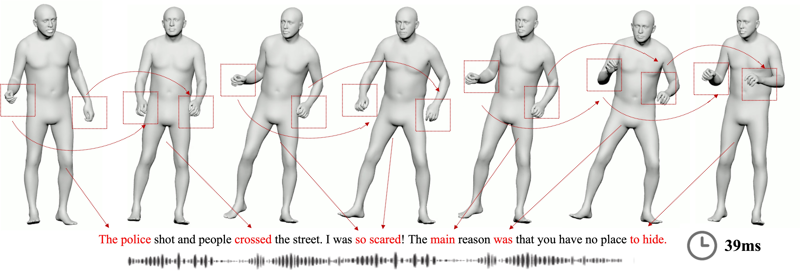
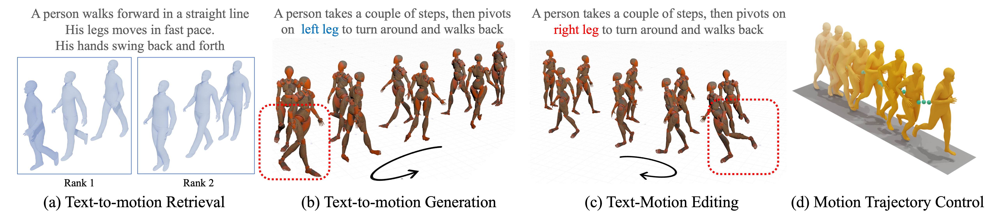
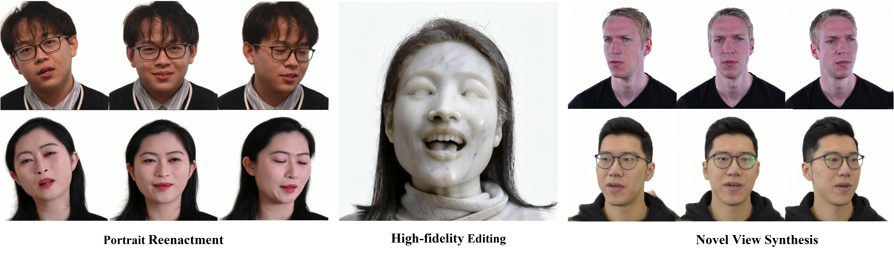
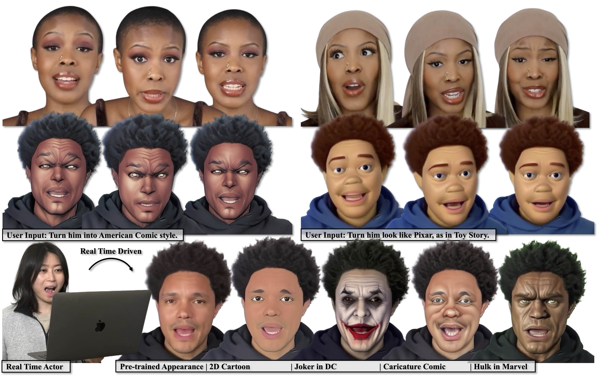
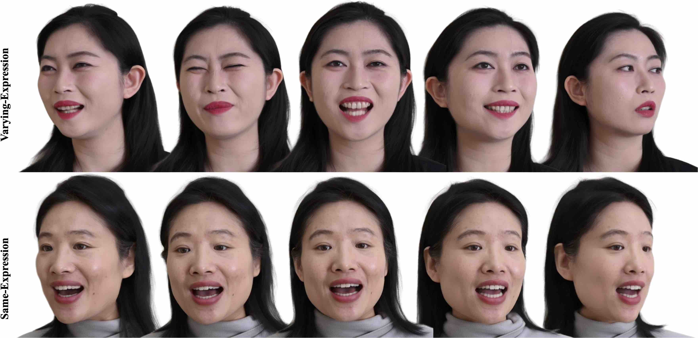
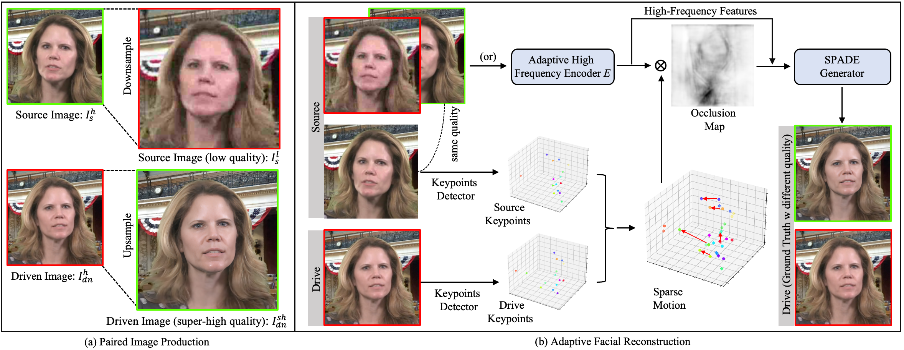
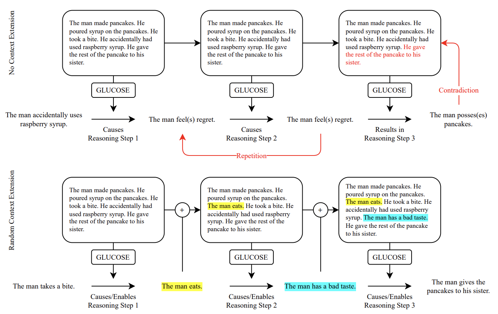

Andy (Pinxin) Liu
Hi!
I am a PhD student, supervised by Dr. Chenliang Xu, in Computer Science department at University of Rochester. My research interests are Multi-modal Learning and Computer Graphics, including Multi-modal Large Language Models, Digital Human Rendering/Motion Synthesis, and Video Generation. Previously, I was an undergraduate student who received the highest honor distinction in research Bachelor of Science in Computer Science at the University of Rochester.
Here is my
NEWS
- [03/2025] I will join Meta Reality Lab as a Research Scientist Intern.
- [11/2024] One first author paper accepted 3DV 2025.
- [09/2024] One co-author paper accepted Siggraph Asia 2024.
- [07/2024] One first author paper accepted ECCV 2024.
- [06/2024] Joined FlawlessAI as a Research Scientist Intern.
- [05/2024] I received a BS degree in Computer Science with the Highest Honor Distinction in Research.
- [05/2024] One co-authored paper accepted to Interspeech 2024.
- [05/2024] One first-authored paper accepted to ACL 2024.
- [04/2024] I was honored as the National Student Employee of the Year for 2024, selected from a highly competitive pool of six candidates across the country.
- [12/2023] One first-authored paper accepted to ICASSP 2024.
- [01/2023] One co-authored paper accepted to AAAI 2021 Workshop.
PAPERS
-

- 
- 
- 
- 
- 
- 
-

Contextualized Multi-Step Commonsense Reasoning through Context Extension AAAI Workshop 2023[Paper]
TEACHING
- 2024 Spring CSC 2/449: Machine Vision
- 2023 FALL CSC 446: Machine Learning
- 2023 SPRING CSC 2/447: Nature Language Processing
- 2022 Fall CSC 2/448 Statistical Speech and Language Processing
Reviewing
-
CVPR 2024, 2025, EMNLP 2023, KDD 2024, AAAI 2024, ICLR 2025, 3DV 2025